Présentation du projet
Le Choix
Pour notre projet de Fin de Semestre, nous avons décidé de programme un jeu Blackjack en Python. Blackjack est un jeu de cartes très populaire dans les casinos du monde entier. L'objectif du jeu est de obtenir une main de cartes dont la valeur totale s'approche le plus possible de 21 sans la dépasser.
Dès le début du projet, l'idée était d'implémenter une interface graphique avec la bibliothèque Turtle, qui permet de créer des graphiques en utilisant des commandes simples et intuitives. En utilisant Turtle, nous avons pu créer une interface graphique simple mais élégante pour notre jeu Blackjack.
Le jeu se déroule comme suit: lorsque vous lancez le programme, vous êtes invité à entrer le montant de votre pari. Vous recevez alors deux cartes face visible, tandis que le croupier reçoit une carte face visible et une carte face cachée. Vous pouvez alors choisir de "Hit" pour obtenir une nouvelle carte pour essayer de vous rapprocher de 21, ou de "rester" avec les cartes que vous avez déjà. Si vous dépassez 21, vous êtes éliminé du jeu.
Nous avons également implémenter un système de pointage et de record, pour donner plus d'incentive à bien jouer le jeu.
Une fois que vous avez fini de tirer, c'est au tour du croupier de jouer. Le croupier doit tirer jusqu'à ce qu'il ait au moins 17 points, et ne peut pas tirer de nouvelles cartes une fois qu'il a atteint 17 points ou plus. Si le croupier dépasse 21, vous gagnez automatiquement. Sinon, le gagnant est déterminé en comparant les scores des deux joueurs: si votre score est supérieur à celui du croupier, vous gagnez votre mise; sinon, vous perdez.
Croquis de l'interface Turtle
Le début!

Suivi du Projet
Première Semaine
Dans cette première semaine, nous avons créé le fichier blackjack.py où nous allons écrire toutes les fonctions de bases d’un programme de blackjack :
Nous avons créé 2 listes pour stocker les couleurs et les faces des cartes…
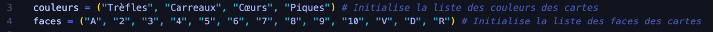
… pour ensuite écrire la fonction creer_paquet, pour créer le paquet de cartes :
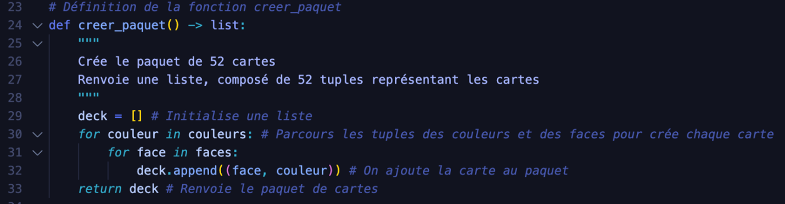
De plus, on a défini la fonction distribue_carte, qui prend en paramètres 3 arguments, soient le paquet de cartes, une main, et le nombre de cartes, pour transférer une ou plusieurs cartes du paquet à la main :
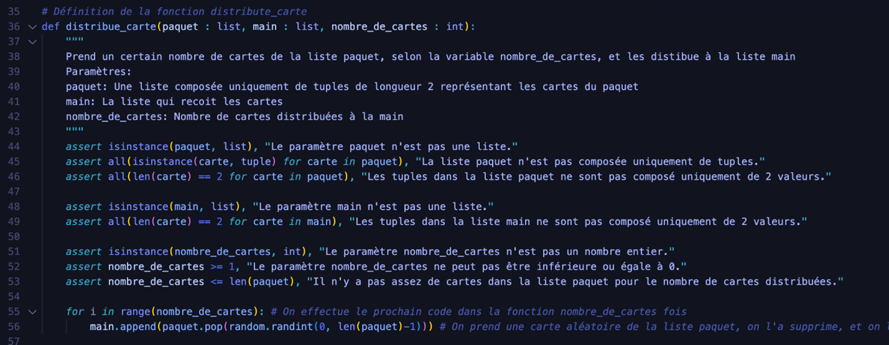
Deuxième Semaine
En raison de plusieurs évaluations cette semaine, nous n’avons pas pu trop avancer le projet. Cependant, nous avons quand même écrit une autre fonction de base pour un projet blackjack : la fonction compte_valeur, qui prend en paramètre une main composée de cartes, et compte sa valeur. Cette fonction a été un peu compliquer à implémenter, car il fallait prendre en compte l’Ace, qui peut soit valoir 11 ou 1.
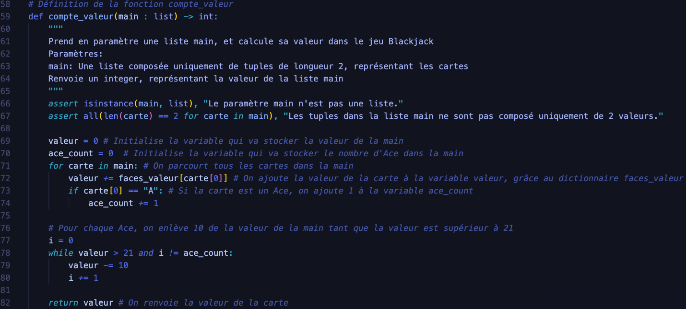
Et, pour finir le fichier blackjack.py, nous avons programmer une fonction qui détermine le gagnant d’une partie, en prenant la main du croupier et la main du joueur pour les comparer. Cette fonction s’appelle evalue_partie, et elle renvoie True si le joueur est gagnat, False si le joueur est perdant, et « egal » si il y a une égalité :
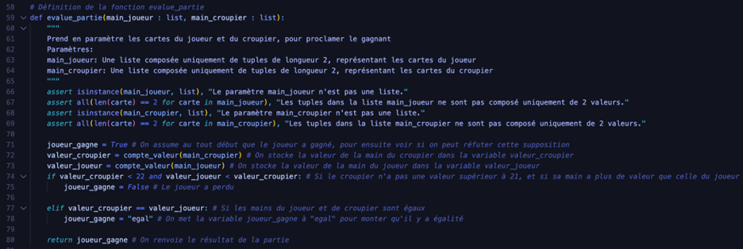
Avec cette fonction, nous avons compléter toutes les fonctions de bases d’un programme de Blackjack, puis maintenant nous pouvons commencer à implémenter une interface graphique grâce à la bibliothèque Turtle.
Troisième Semaine
Pour intégrer une interface graphique, il fallait première créer une fonction pour gérer l’affichage des cartes. Donc, nous avons écrit la fonction dessine_carte, qui prend en paramètre les arguments taille (qui définit la taille de la carte), carte (la carte à dessinée), et tortue (qui définit le Turtle qui va dessiner la carte) :
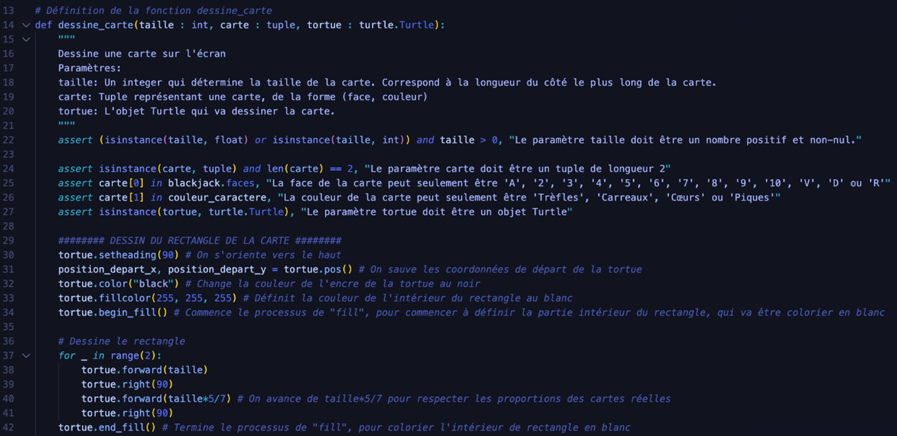
Et, pour obtenir la couleur et le caractère correspondant à chaque carte, nous utilisons le dictionnaire couleur_caractere :
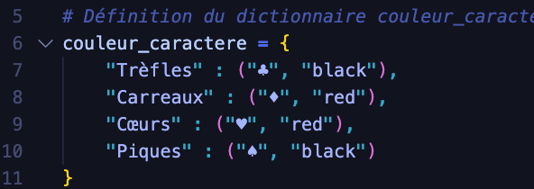
Voici un exemple de cartes dessinées avec cette fonction :
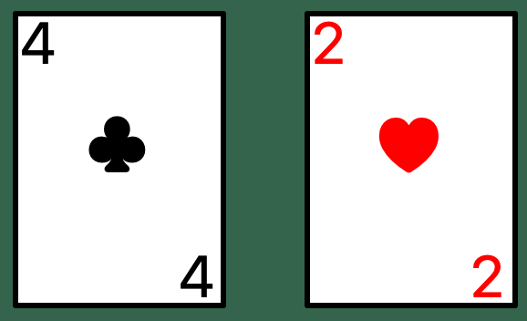
Par la suite, il fallait avoir une fonction, qui peut afficher les cartes d’une main au milieu de l’écran, mais soit en haut, soit en bas, dépendent de si la main appartient au joueur ou au croupier. De plus, cette fonction devait être capable de cacher une des cartes distribuées, car au Blackjack, nous n’avons pas le droit de voir la deuxième carte du croupier. Ainsi, à l’attaque de cette quatrième semaine, nous avons codé affiche_cartes.
Cette fonction prend 4 paramètres. Le deuxième permet de passer une main à la fonction pour qu’il puisse la dessiner. La deuxième et la troisième sont des booléens, qui permettent de spécifier si on veut dessiner les cartes du croupier ou du joueur, et si on veut cacher une des cartes.
Voici la fonction :
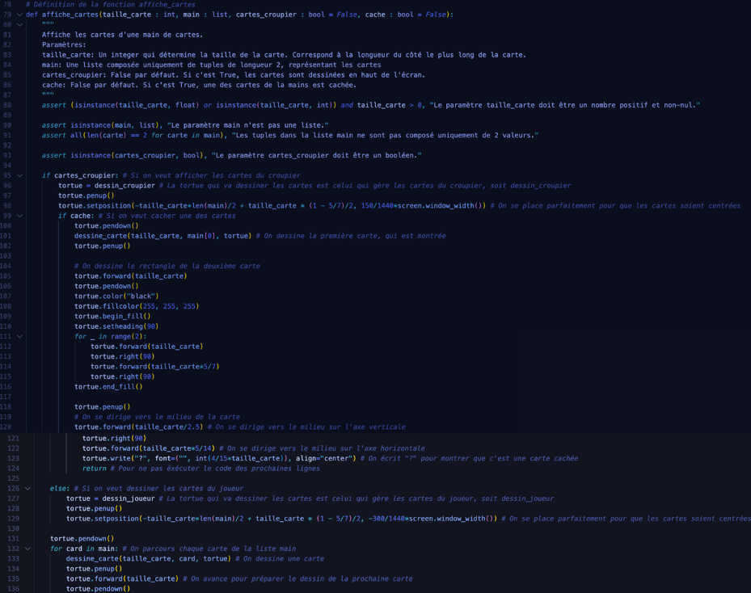
Nous pouvons voir que dans cette fonction, à travers de nombreuses déclaration de « if », nous pouvons contrôler la position des cartes affichées (en haut ou en bas), et si une des cartes est cachée.
Quatrième Semaine
Maintenant, nous pouvons initier toutes les variables nécessaires au jeu :
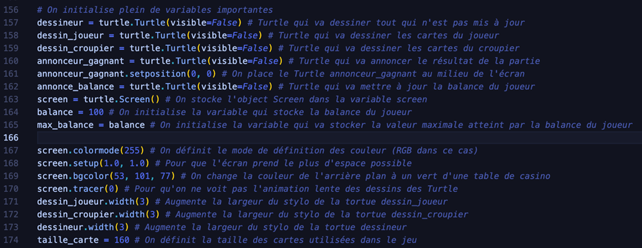
Nous créons 5 objets Turtle : on a dessineur, qui dessine tous qui n’est pas dynamique, qui ne change pas, on a dessin_joueur, qui dessine les cartes du joueur, on a dessin_croupier, qui dessine les cartes du croupier, on a annonceur gagnant, qui va écrire le texte qui annonce le résultat de chaque partie, et on a le Turtle annonce_balance, qui va changer le nombre de balance affiché.
De plus, on change la couleur de l’arrière-plan à un vert qui ressemble à une table de casino, et on stocke la taille des cartes dans la variable taille_carte.
Puis, avec les Turtle dessineur et annonce_balance, on dessine la page du jeu.
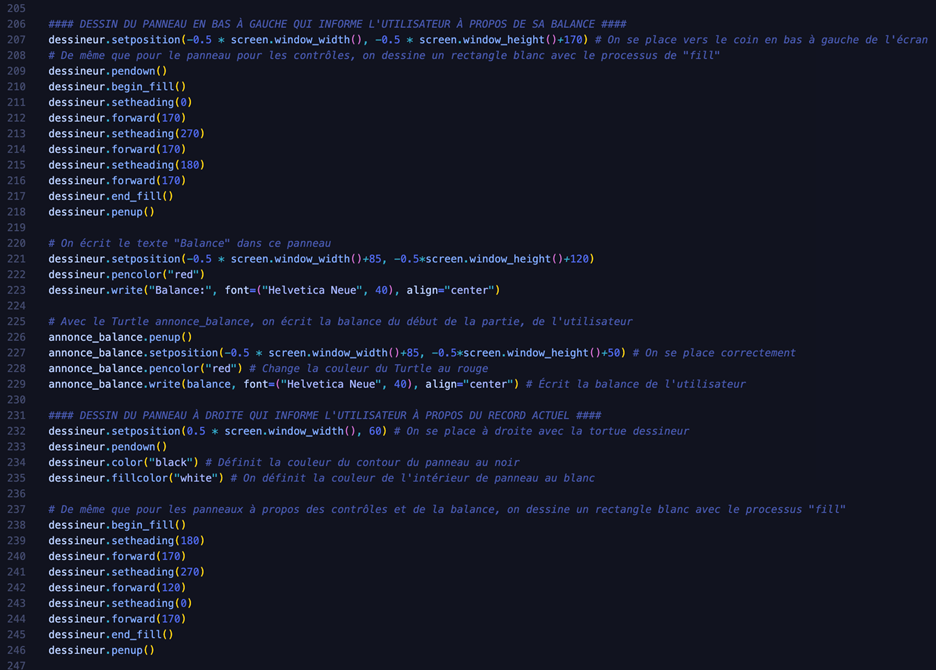
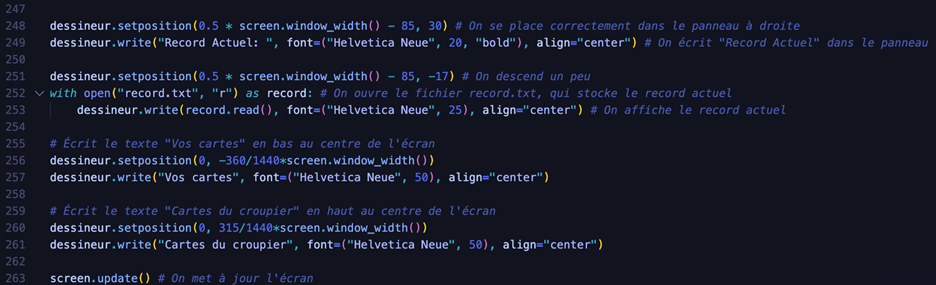
Le processus de Turtle appelé « fill » nous permet de crée des rectangles blancs qui ressortent devant l’arrière-plan vert.
Cela étant, nous définissons pleins de variables essentielles au jeu de Blackjack, soient le paquet de cartes, les mains du joueur et du croupier, la variable termine, et le pari.
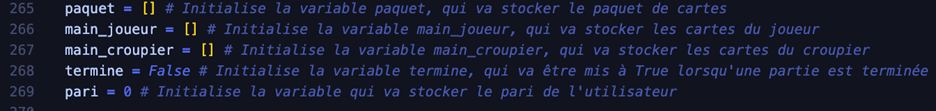
Ensuite, nous définissons la fonction demander_pari, qui va rejeter chaque entrée de pari invalide, jusqu’à ce que nous ayons un pari valide. Puis, on soustrait l’argent du pari à la balance, et le pari est renvoyé :
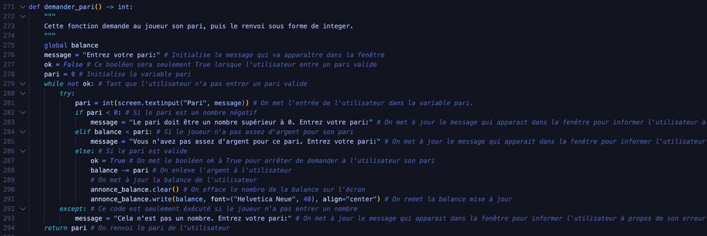
Par la suite, nous initialisons le jeu avec la fonction initialise_partie :
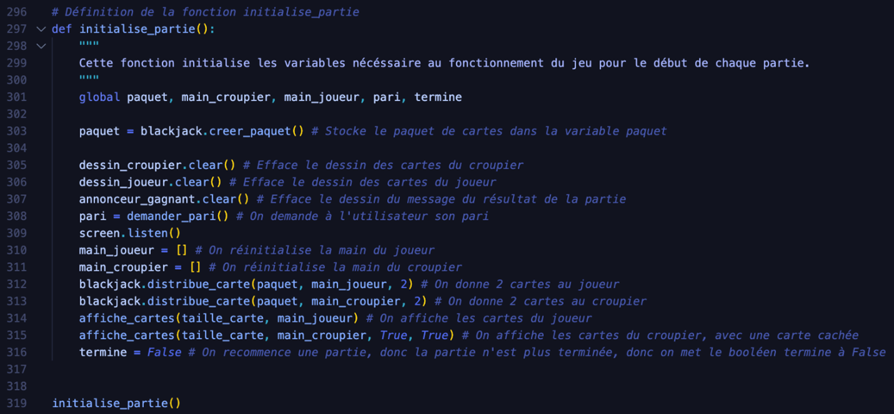
Dans cette fonction, nous créons le paquet de carte, on distribue des cartes au joueur et au croupier, on initialise le pari, puis on affiche les cartes.
De plus, nous programmons les fonction hit et rester, qui sont appelées lorsque l’utilisateur appuie sur espace et S, respectivement. Ces fonctions envoient l’action du joueur à la fonction joueur.
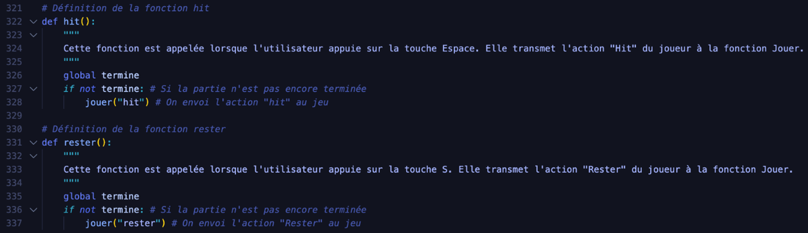
Après, nous avons rapidement crée le fichier record.txt qui stocke le meilleur score atteint dans le jeu.
Par la suite, nous avons programmer la fonction jouer, qui est responsable pour le bon fonctionnement du jeu, et qui prend en argument l’action de l’utilisateur :
Si l’utilisateur a décidé de « Hit », on lui donne une carte, et on affiche cette nouvelle carte sur l’écran. Puis, on regarde si l’utilisateur a dépassé 21 et si oui, on lui dit qu’il a perdu grâce au Turtle annonceur_gagnant. De plus, si le joueur a perdu, et il n’a plus d’argent, on lui présente son record, et on lui félicite si c’est un nouveau record, et on ferme le programme. On met à jour également le nouveau record dans le fichier record.txt s’il a été atteint.
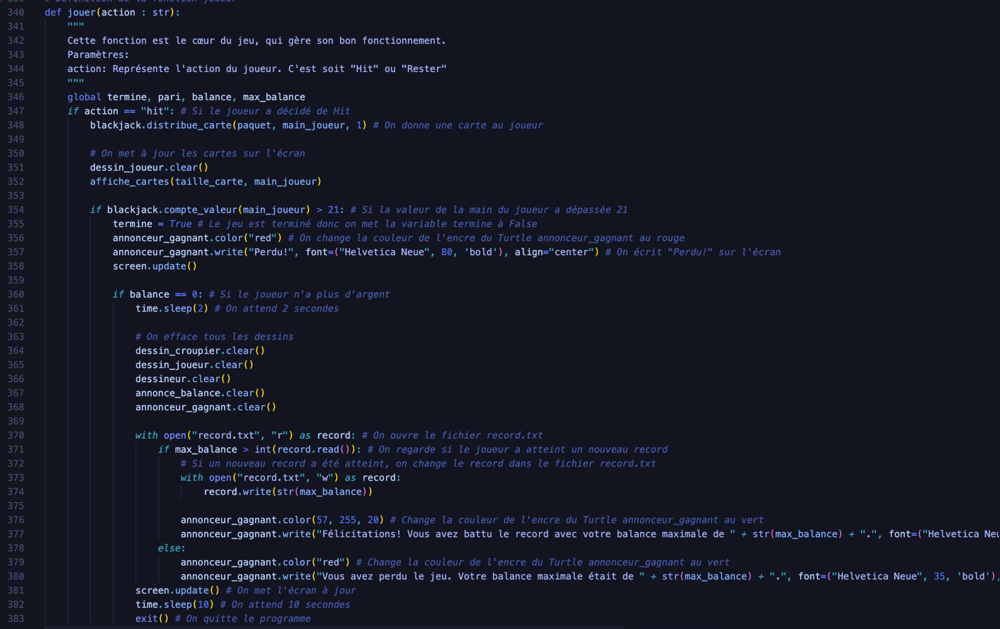
Si le joueur a décidé de rester, on affiche les cartes du croupier, et on lui fait joueur son tour avec la fonction jeu_croupier. Ensuite, nous obtenons le résultat de la partie avec la fonction evalue_partie. Si le joueur a gagné, on lui donne le double de son pari, et on met à jour la balance de l’utilisateur.
Si le joueur a perdu, de même que quand le joueur perd après un hit, on annonce qu’il a perdu, on présente son record, on félicite le joueur et on le met à jour si un nouveau record a été atteint.
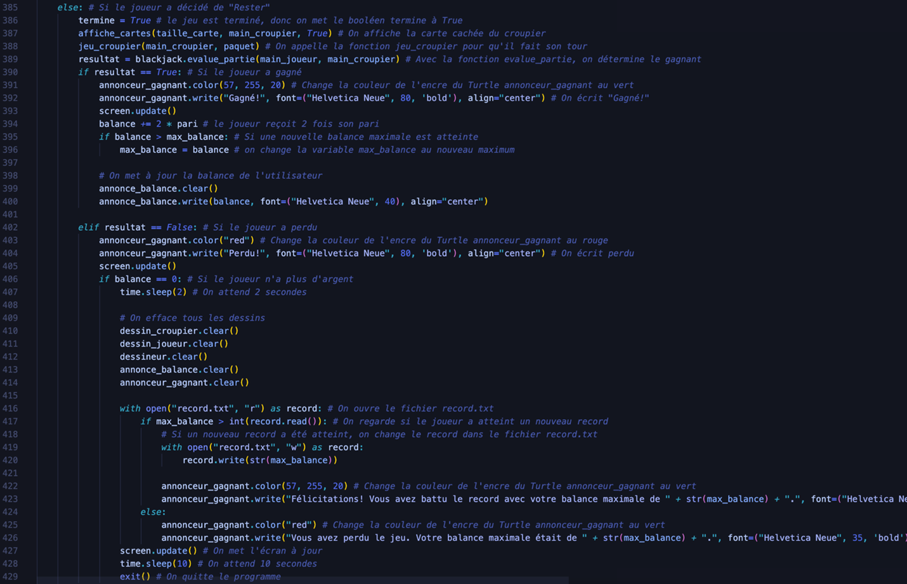
Finalement, on dit au programme d’écouter pour les appuis des touches espace et S, puis on appelle soit la fonction hit, soit la fonction rester, selon l’appelle.
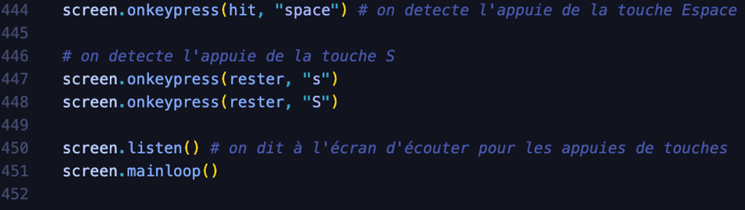